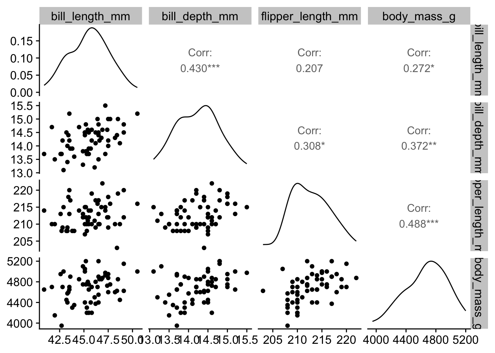
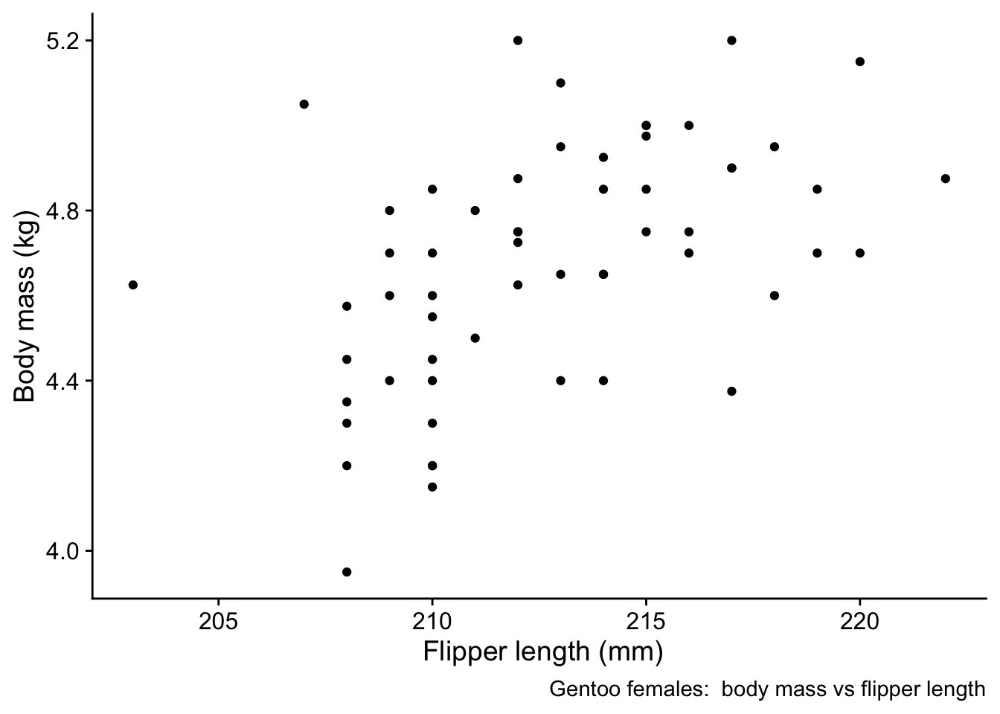
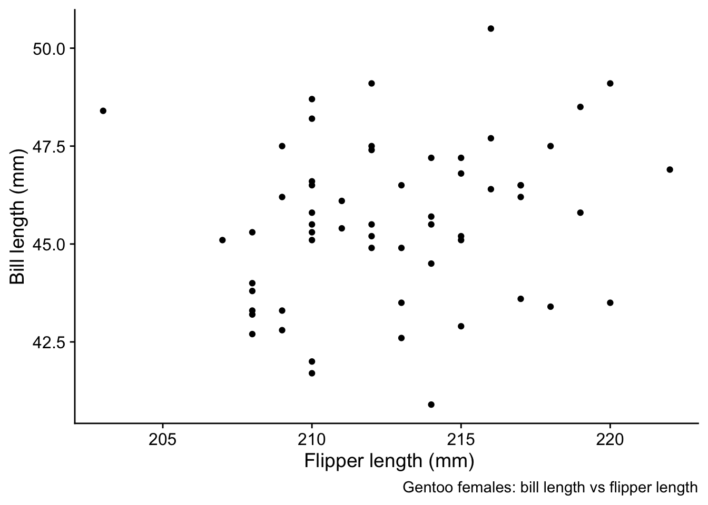
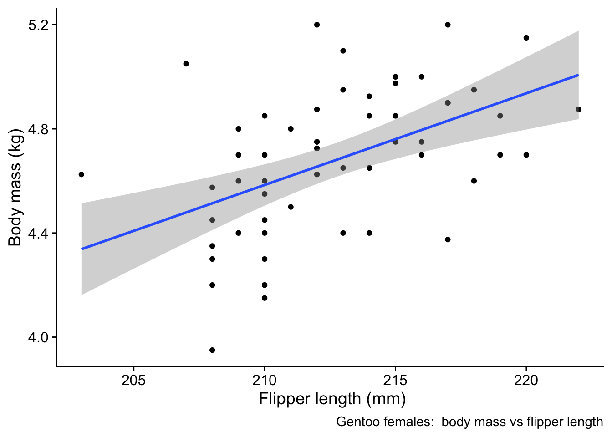
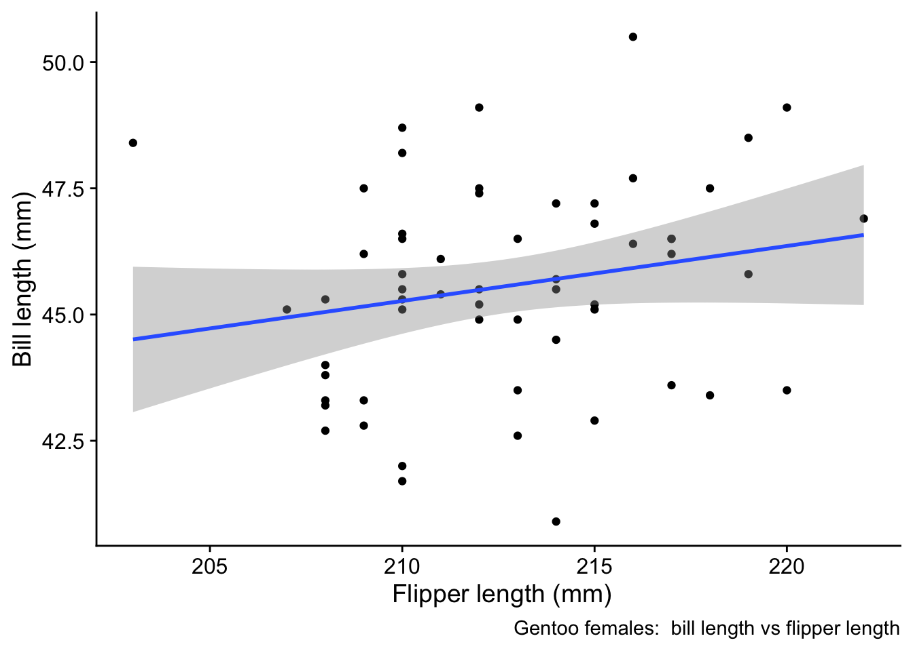
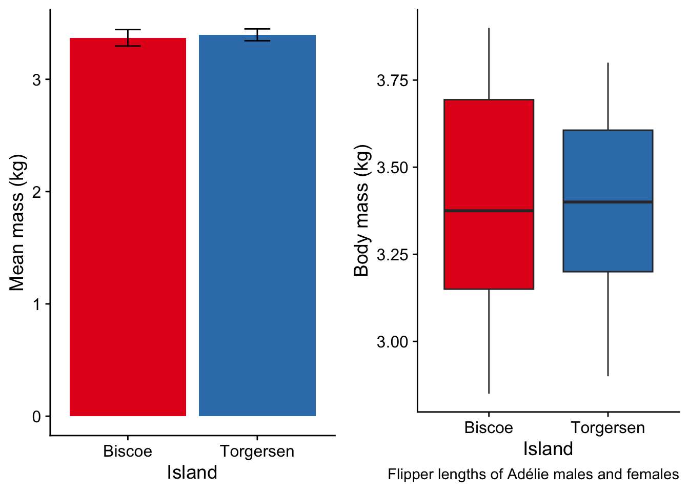
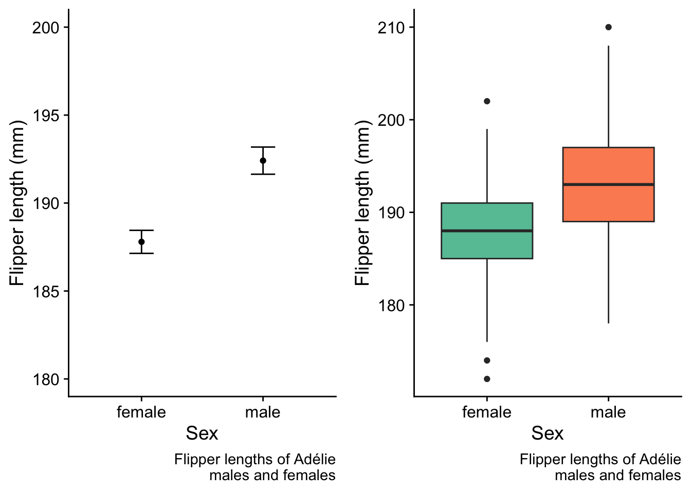

Penguins
Some exemplar analyses, using data from the palmerpenguins package in R, developed by Alison Horst and Kristen Gorman and maintained by Allison Horst. The artwork is by Allison Horst.
These data comprise measurements across over 300 individuals of various numerical dimensions of three species of penguins, both male and female, on each of three islands in the Palmer archipelago of Antarctica. Measurements were conducted cross several different years.

Rows: 344
Columns: 8
$ species <fct> Adelie, Adelie, Adelie, Adelie, Adelie, Adelie, Adel…
$ island <fct> Torgersen, Torgersen, Torgersen, Torgersen, Torgerse…
$ bill_length_mm <dbl> 39.1, 39.5, 40.3, NA, 36.7, 39.3, 38.9, 39.2, 34.1, …
$ bill_depth_mm <dbl> 18.7, 17.4, 18.0, NA, 19.3, 20.6, 17.8, 19.6, 18.1, …
$ flipper_length_mm <int> 181, 186, 195, NA, 193, 190, 181, 195, 193, 190, 186…
$ body_mass_g <int> 3750, 3800, 3250, NA, 3450, 3650, 3625, 4675, 3475, …
$ sex <fct> male, female, female, NA, female, male, female, male…
$ year <int> 2007, 2007, 2007, 2007, 2007, 2007, 2007, 2007, 2007…# A tibble: 8 × 3
# Groups: species [3]
species sex n
<fct> <fct> <int>
1 Adelie female 73
2 Adelie male 73
3 Adelie <NA> 6
4 Chinstrap female 34
5 Chinstrap male 34
6 Gentoo female 58
7 Gentoo male 61
8 Gentoo <NA> 5Gentoo females
First, let us

Correlation
Body mass vs flipper length

Pearson's product-moment correlation
data: gentoo_f$flipper_length_mm and gentoo_f$body_mass_kg
t = 4.1796, df = 56, p-value = 0.0001035
alternative hypothesis: true correlation is not equal to 0
95 percent confidence interval:
0.2623673 0.6624753
sample estimates:
cor
0.487618 Bill length vs flipper length

Pearson's product-moment correlation
data: gentoo_f$flipper_length_mm and gentoo_f$bill_length_mm
t = 1.5824, df = 56, p-value = 0.1192
alternative hypothesis: true correlation is not equal to 0
95 percent confidence interval:
-0.0543168 0.4415807
sample estimates:
cor
0.2068815 Regression
Body mass vs flipper length

Call:
lm(formula = body_mass_kg ~ flipper_length_mm, data = gentoo_f)
Residuals:
Min 1Q Median 3Q Max
-0.56394 -0.16025 0.00255 0.19488 0.57129
Coefficients:
Estimate Std. Error t value Pr(>|t|)
(Intercept) -2.812895 1.792979 -1.569 0.122319
flipper_length_mm 0.035225 0.008428 4.180 0.000103 ***
---
Signif. codes: 0 '***' 0.001 '**' 0.01 '*' 0.05 '.' 0.1 ' ' 1
Residual standard error: 0.248 on 56 degrees of freedom
Multiple R-squared: 0.2378, Adjusted R-squared: 0.2242
F-statistic: 17.47 on 1 and 56 DF, p-value: 0.0001035Bill length vs flipper length

Call:
lm(formula = bill_length_mm ~ flipper_length_mm, data = gentoo_f)
Residuals:
Min 1Q Median 3Q Max
-4.8046 -1.2397 0.0942 1.3059 4.5777
Coefficients:
Estimate Std. Error t value Pr(>|t|)
(Intercept) 22.4061 14.6370 1.531 0.131
flipper_length_mm 0.1089 0.0688 1.582 0.119
Residual standard error: 2.025 on 56 degrees of freedom
Multiple R-squared: 0.0428, Adjusted R-squared: 0.02571
F-statistic: 2.504 on 1 and 56 DF, p-value: 0.1192Adélie Females
Difference between Islands
# A tibble: 13 × 4
# Groups: species, sex [8]
species sex island n
<fct> <fct> <fct> <int>
1 Adelie female Biscoe 22
2 Adelie female Dream 27
3 Adelie female Torgersen 24
4 Adelie male Biscoe 22
5 Adelie male Dream 28
6 Adelie male Torgersen 23
7 Adelie <NA> Dream 1
8 Adelie <NA> Torgersen 5
9 Chinstrap female Dream 34
10 Chinstrap male Dream 34
11 Gentoo female Biscoe 58
12 Gentoo male Biscoe 61
13 Gentoo <NA> Biscoe 5Is the mean mass of the Adélie females on Torgersen island different from that of those on Biscoe island?

Welch Two Sample t-test
data: torgersens and biscoes
t = 0.29352, df = 38.951, p-value = 0.7707
alternative hypothesis: true difference in means is not equal to 0
95 percent confidence interval:
-0.1562133 0.2092436
sample estimates:
mean of x mean of y
3.395833 3.369318 Was it OK to have used a t-test?
Shapiro-Wilk normality test
data: torgersens
W = 0.96156, p-value = 0.4705
Shapiro-Wilk normality test
data: biscoes
W = 0.93453, p-value = 0.1525All Adélies
Do the male and female flipper lengths differ for Adélies?

Welch Two Sample t-test
data: males and females
t = 4.5589, df = 140.25, p-value = 1.11e-05
alternative hypothesis: true difference in means is not equal to 0
95 percent confidence interval:
2.614448 6.618429
sample estimates:
mean of x mean of y
192.4110 187.7945 Was it OK to have used a t-test?
Shapiro-Wilk normality test
data: males
W = 0.98427, p-value = 0.4984
Shapiro-Wilk normality test
data: females
W = 0.98414, p-value = 0.4912